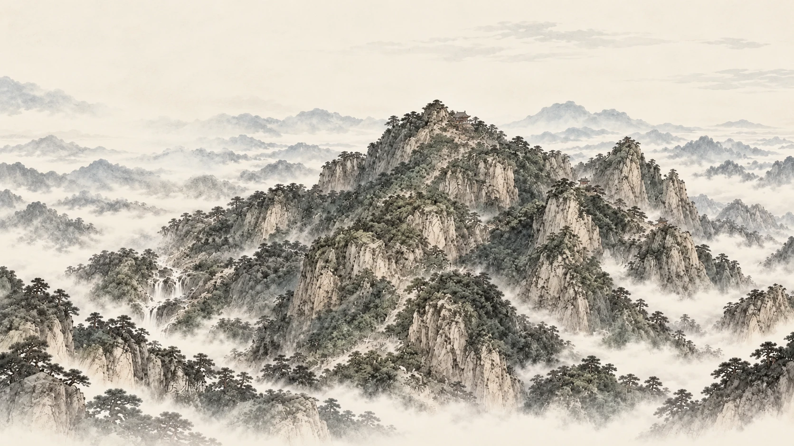

一山千年 · 以山为卷
五岳独尊，中华山河之魂。沿古道与景点，读一座山的千年。
山不只在眼前，也在千年文字里
中华泰山 · 文化沉浸式体验
A JOURNEY THROUGH TIME IN TAISHAN
泰山，岱宗之首，五岳独尊。在这里，读历史、品诗词，沿着山路，与千年的文化相逢。
你的文化同行者
一问一答间，听见泰山的千年回响。
聊一聊泰山的历史与文化
回答附资料来源，证据不足时会说明。